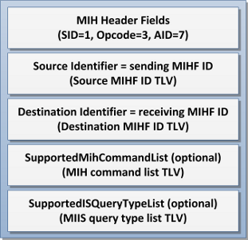

ODTONE 0.4 - Open Dot Twenty ONE.
In the ODTONE 0.4 release was redefined the LINK_CMD_LIST, LINK_EVENT_LIST, MIH_CMD_LIST and MIH_EVENT_LIST that were not in accordance with the standard.
![[Important]](../images/important.png) |
Important |
|---|---|
Implementations of MIH-Users and Link_SAP modules using the LINK_CMD_LIST, LINK_EVENT_LIST, MIH_CMD_LIST and/or MIH_EVENT_LIST datatypes need to change their code, in order for it to work with the new changes. Take into consideration that this is necessary for absolute interoperability with the standard. |
Data type definitions on ODTONE 0.3 and earlier
/** * The enumeration of MIH_EVENT_LIST and LINK_EVENT_LIST data type. */ enum event_list_enum { link_detected = 0, /**< Link detected. */ link_up = 1, /**< Link up. */ link_down = 2, /**< Link down. */ link_parameters_report = 3, /**< Link parameters report. */ link_going_down = 4, /**< Link doing down. */ link_handover_imminent = 5, /**< Link handover imminent. */ link_handover_complete = 6, /**< Link handover complete. */ link_pdu_transmit_status = 7, /**< Link PDU transmit status. */ }; /** * MIH_EVENT_LIST and LINK_EVENT_LIST data type. */ typedef bitmap<32, event_list_enum> event_list; /////////////////////////////////////////////////////////////////////////////// /** * The enumeration of MIH_CMD_LIST and LINK_CMD_LIST data type. */ enum command_list_enum { link_get_parameters = 0, /**< Link get parameters. */ link_configure_thresholds = 1, /**< Link configure thresholds. */ link_actions = 2, /**< Link actions. */ net_ho_candidate_query = 3, /**< NET handover candidate query. */ net_ho_commit = 3, /**< NET handover commit. */ n2n_ho_query_resources = 3, /**< N2N handover query resources. */ n2n_ho_commit = 3, /**< N2N handover commit. */ n2n_ho_Complete = 3, /**< N2N handover complete. */ mn_ho_candidate_query = 4, /**< MN handover candidate query. */ mn_ho_commit = 4, /**< MN handover commit. */ mn_ho_complete = 4, /**< MN handover complete. */ }; /** * MIH_CMD_LIST and LINK_CMD_LIST data type. */ typedef bitmap<32, command_list_enum> command_list;
Data type definitions on ODTONE 0.4
/** * MIH_CMD_LIST data type enumeration. */ enum mih_cmd_list_enum { mih_cmd_link_get_parameters = 0, /**< Link get parameters. */ mih_cmd_link_configure_thresholds = 1, /**< Link configure thresholds. */ mih_cmd_link_actions = 2, /**< Link actions. */ mih_cmd_net_ho_candidate_query = 3, /**< NET handover candidate query. */ mih_cmd_net_ho_commit = 3, /**< NET handover commit. */ mih_cmd_n2n_ho_query_resources = 3, /**< N2N handover query resources. */ mih_cmd_n2n_ho_commit = 3, /**< N2N handover commit. */ mih_cmd_n2n_ho_complete = 3, /**< N2N handover complete. */ mih_cmd_mn_ho_candidate_query = 4, /**< MN handover candidate query. */ mih_cmd_mn_ho_commit = 4, /**< MN handover commit. */ mih_cmd_mn_ho_complete = 4, /**< MN handover complete. */ }; /** * MIH_CMD_LIST data type. */ typedef bitmap<32, mih_cmd_list_enum> mih_cmd_list; /** * MIH_EVT_LIST data type enumeration. */ enum mih_evt_list_enum { mih_evt_link_detected = 0, /**< Link detected. */ mih_evt_link_up = 1, /**< Link up. */ mih_evt_link_down = 2, /**< Link down. */ mih_evt_link_parameters_report = 3, /**< Link parameters report. */ mih_evt_link_going_down = 4, /**< Link doing down. */ mih_evt_link_handover_imminent = 5, /**< Link handover imminent. */ mih_evt_link_handover_complete = 6, /**< Link handover complete. */ mih_evt_link_pdu_transmit_status = 7, /**< Link PDU transmit status. */ }; /** * MIH_EVT_LIST data type. */ typedef bitmap<32, mih_evt_list_enum> mih_evt_list; /** * LINK_CMD_LIST data type enumeration. */ enum link_cmd_list_enum { cmd_link_event_subscribe = 1, /**< Event subscribe. */ cmd_link_event_unsubscribe = 2, /**< Event unsubscribe. */ cmd_link_get_parameters = 3, /**< Get parameters. */ cmd_link_configure_thresholds = 4, /**< Configure thresholds. */ cmd_link_action = 5, /**< Action. */ }; /** * LINK_CMD_LIST data type. */ typedef bitmap<32, link_cmd_list_enum> link_cmd_list; /** * LINK_EVT_LIST data type enumeration. */ enum link_evt_list_enum { evt_link_detected = 0, /**< Link detected. */ evt_link_up = 1, /**< Link up. */ evt_link_down = 2, /**< Link down. */ evt_link_parameters_report = 3, /**< Link parameters report. */ evt_link_going_down = 4, /**< Link doing down. */ evt_link_handover_imminent = 5, /**< Link handover imminent. */ evt_link_handover_complete = 6, /**< Link handover complete. */ evt_link_pdu_transmit_status = 7, /**< Link PDU transmit status. */ }; /** * LINK_EVT_LIST data type. */ typedef bitmap<32, link_evt_list_enum> link_evt_list;
Due to this changes the definition of two new TLVs were necessary, in order to exchanges of LINK_CMD_LIST and LINK_EVENT_LIST data types between the MIHF and the Link SAPs.
Table 3. TLVs for LINK_CMD_LIST and LINK_EVENT_LIST
|
MIH_LINK_SAP Primitive |
TLV Type Name |
TLV Type Value |
Data type |
|---|---|---|---|
|
SupportedLinkEventList |
tlv_link_evt_list |
101 |
LINK_EVT_LIST |
|
SupportedLinkCommandList |
tlv_link_cmd_list |
102 |
LINK_CMD_LIST |
The message used by the MIH-Users to register with the MIHF has been modified in order to specifically define which commands and queries it supports. In this way, the MIHF can properly forward the messages to the MIH-Users. Check this for more info about the local discovery.
MIH_User_Register.indication definition on ODTONE 0.3

MIH_User_Register.indication definition on ODTONE 0.4

Changes in the code
ODTONE 0.3:
// For the MIH-User odtone::mih::message m; m << odtone::mih::indication(odtone::mih::indication::user_register) & odtone::mih::tlv_mbb_handover_support(true); // ----- || ------- // For the MIIS odtone::mih::message m; m << odtone::mih::indication(odtone::mih::indication::user_register) & odtone::mih::tlv_mbb_handover_support(false);
ODTONE 0.4:
// For the MIH-User odtone::mih::message m; boost::optional<odtone::mih::mih_cmd_list> supp_cmd = parse_supported_commands(cfg); m << odtone::mih::indication(odtone::mih::indication::user_register) & odtone::mih::tlv_command_list(supp_cmd); // ----- || ------- // For the MIIS odtone::mih::message m; boost::optional<odtone::mih::iq_type_list> supp_iq = parse_supported_queries(cfg); m << odtone::mih::indication(odtone::mih::indication::user_register) & odtone::mih::tlv_query_type_list(supp_iq);
![[Note]](../images/note.png) |
Note |
|---|---|
The MIH-User provided by ODTONE was modified in order to parse the supported commands from the configuration file. The MIIS provided by ODTONE was modified in order to parse the supported queries from the configuration file. |
|
Note |
|---|---|
In the MIHF configuration file you can configure which commands and queries a given MIH-User supports. If nothing is specified it assume that the MIH-User supports all commands but it does not support any query. |